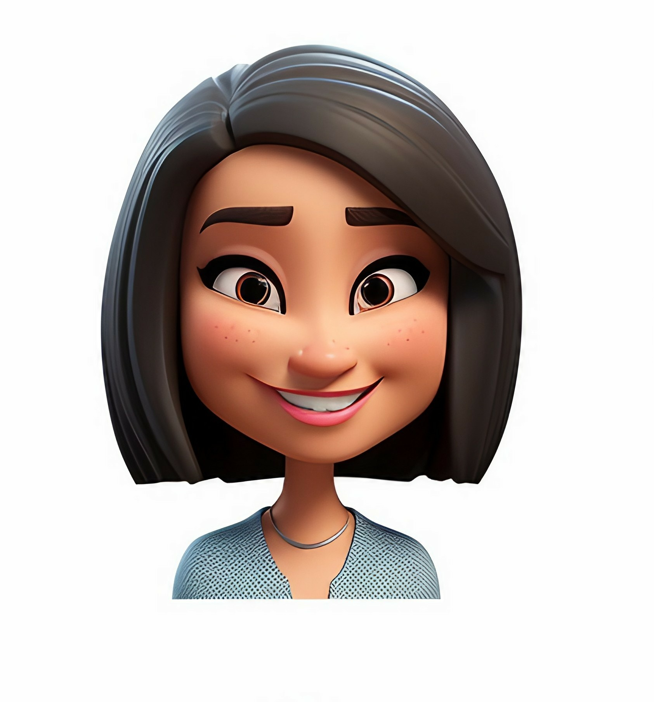

Dinuri Tanasha
passionate advocate for water and sanitation, dedicated to making clean water accessible for all.
- Age: 21
- Work: Student
- Family: Single
- Location: Colombo
Short Bio
I am a student and a Water and Sanitation Volunteer. I work to improve access to clean water and sanitation in underserved communities. With my background in environmental science and public health, I assist local and international organizations in designing and maintaining sustainable water and sanitation projects. My role includes community education, technical support, and project management, empowering communities to manage their own water and sanitation needs.
Volunteering Availability
| Day | Availability |
|---|---|
| Monday | 8 PM - 10 PM |
| Tuesday | 8 PM - 10 PM |
| Wednesday | Not Available |
| Thursday | 8 PM - 10 PM |
| Friday | Not Available |
| Saturday | 9 AM - 5 PM |
| Sunday | 9 AM - 5 PM |
Goals
- Educate the community about clean water and sanitation.
- Support infrastructure projects for sustainable water and sanitation.
- Promote good hygiene practices.
- Empower local leaders to sustain projects long-term.
- Advocate for policy changes to ensure equitable access to clean water and sanitation services.
Contact Us
Experences
- Gain hands-on experience in planning, organizing, and executing water and sanitation projects.
- Develop strong communication skills to effectively engage with community members and understand their needs.
- Acquire knowledge in water purification techniques, sanitation practices, and environmental sustainability.
- Learn to adapt to different situations and find innovative solutions to improve water quality and sanitation facilities.
- Enhance leadership skills by managing diverse teams and fostering collaboration to achieve project goals.
UN Goals I Support


My Skills
Communication 90%
Team-working 75%
IT 60%